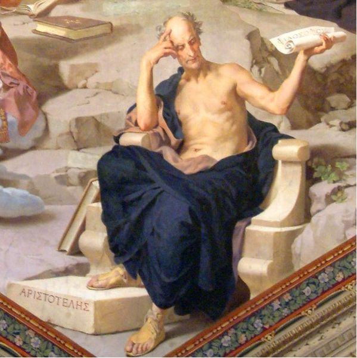

"Lo bello" y "lo feo"
Como vimos, a la conceptualización de estereotipo que estamos analizando no escapa lo que entendemos como “lo lindo” o “lo feo”.
→ Nos referimos a los estereotipos de belleza ←
Es muy difícil definir la belleza, ya que se trata de una idea ligada a la cultura y modo de vida de diferentes grupos de personas, de diferentes lugares. Otra variable a considerar es el momento de la historia al cual nos estemos refiriendo.
|  |
Tal vez la definición más aceptada sea la que propuso Aristóteles, quien considera a la belleza como armonía y proporción de las partes con el todo. Tomemos en cuenta que la idea de armonía y proporción son también cuestiones que están estrechamente ligadas a la cultura, contexto, etcétera. |
Obra publicada con Licencia Creative Commons Reconocimiento No comercial Sin obra derivada 4.0